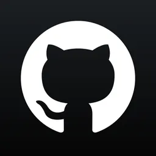

Sobre mí
Hola, soy un estudiante universitario apasionado por aprender y
descubrir nuevas ideas. Estoy buscando una oportunidad para ganar
experiencia en el campo del desarrollo web y formarme como Full
Stack Developer.
Siempre estoy interesado en nuevas oportunidades para crecer como
persona y profesionalmente.
Habilidades
- HTML, CSS and Javascript
- Git y GitHub
- Java
- MySQL
- Office365 Apps
Me siento cómodo trabajando con:
- Python
- NodeJS
- TypeScript
- Backend Java frameworks
Puedo aprender o acostumbrarme fácilmente a trabajar con tecnologías como:
Luis Joel Guingla Verdezoto
Estudiante de Ingeniería en Software
Experiencia
Escuela Politécnica Nacional
Miembro del equipo de ciberseguridad - Club de Software EPN
Sept. 2021 - Mar. 2022 | 6 meses
Educación
Escuela Politécnica Nacional
Ingeniería en Software
Sept. 2019 - Actualidad | 4 años y 3 meses
Idiomas
Inglés: B2 (CEC-EPN)
Contacto
|
|
 |